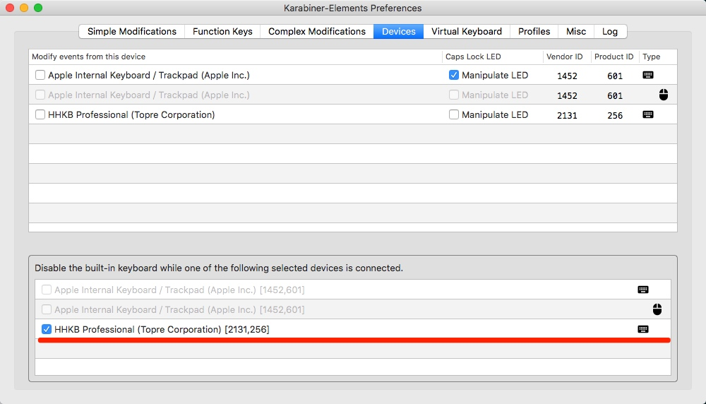

<!DOCTYPE HTML>
<html>
<head>
	<meta charset="utf-8">
	<title>  
	  
  	xuzhihua blog
  	
	</title>

  <meta name="HandheldFriendly" content="True">
  <meta name="MobileOptimized" content="320">
  <meta name="viewport" content="width=device-width, initial-scale=1">

	<link href="atom.xml" rel="alternate" title="xuzhihua blog" type="application/atom+xml">

	<link href="asset/stylesheets/screen.css" media="screen, projection" rel="stylesheet" type="text/css">
	<link href="asset/stylesheets/font-awesome.min.css" media="screen, projection" rel="stylesheet" type="text/css">
	<script src="asset/javascripts/jquery.min.js"></script>
	<script src="asset/highlightjs/highlight.pack.js"></script>
	<link href="asset/highlightjs/styles/solarized_dark.css" media="screen, projection" rel="stylesheet" type="text/css">
<script>hljs.initHighlightingOnLoad();</script>

	<!--[if lt IE 9]><script src="asset/javascripts/html5.js"></script><![endif]-->
	<!-- <link href='http://fonts.googleapis.com/css?family=Nunito:400,300,700' rel='stylesheet' type='text/css'> -->
	<style type="text/css">
/* latin */
@font-face {
  font-family: 'Nunito';
  font-style: normal;
  font-weight: 300;
  src: local('Nunito-Light'), url(asset/font/1TiHc9yag0wq3lDO9cw0voX0hVgzZQUfRDuZrPvH3D8.woff2) format('woff2');
  unicode-range: U+0000-00FF, U+0131, U+0152-0153, U+02C6, U+02DA, U+02DC, U+2000-206F, U+2074, U+20AC, U+2212, U+2215, U+E0FF, U+EFFD, U+F000;
}
/* latin */
@font-face {
  font-family: 'Nunito';
  font-style: normal;
  font-weight: 400;
  src: local('Nunito-Regular'), url(asset/font/6TbRXKWJjpj6V2v_WyRbMX-_kf6ByYO6CLYdB4HQE-Y.woff2) format('woff2');
  unicode-range: U+0000-00FF, U+0131, U+0152-0153, U+02C6, U+02DA, U+02DC, U+2000-206F, U+2074, U+20AC, U+2212, U+2215, U+E0FF, U+EFFD, U+F000;
}
/* latin */
@font-face {
  font-family: 'Nunito';
  font-style: normal;
  font-weight: 700;
  src: local('Nunito-Bold'), url(asset/font/TttUCfJ272GBgSKaOaD7KoX0hVgzZQUfRDuZrPvH3D8.woff2) format('woff2');
  unicode-range: U+0000-00FF, U+0131, U+0152-0153, U+02C6, U+02DA, U+02DC, U+2000-206F, U+2074, U+20AC, U+2212, U+2215, U+E0FF, U+EFFD, U+F000;
}
	</style>
	
	<style type="text/css">
	.container .left-col{ opacity: 1;}
	#pagenavi a{ font-size: 1.3em;}
	#pagenavi .next:before{ top: 3px;}
	#pagenavi .prev:before{ top: 3px;}
	.container .mid-col .mid-col-container #content .archives .title{ font-size: 1.5em;}
	.container .mid-col .mid-col-container #content article{ padding: 15px 0px;}
	#header .subtitle {
		line-height: 1.2em;
		padding-top: 8px;
	}
	article pre{ background: none; border: none; padding: 0;}
	article .entry-content{text-align: left;}
	.share-comment{ padding: 25px 0px; clear: both;}
	hr{ margin: 20px 0px;border: 0; border-top:solid 1px #ddd;}
	</style>
  

</head>


<body>
	<div class="container">
		<div class="left-col">
			<div class="intrude-less">
				<header id="header" class="inner">
				 
					
					<h1><a href="index.html">xuzhihua blog</a></h1>
					<p class="subtitle"></p>
					<nav id="main-nav">
						<ul class="main">
						
						  <li id=""><a target="_self" href="index.html">[Home]</a></li>
						
						  <li id=""><a target="_self" href="archives.html">[All Archives]</a></li>
						
						  <li id=""><a target="_self" href="Mac.html">Mac</a></li>
						
						  <li id=""><a target="_self" href="OS.html">OS</a></li>
						
						  <li id=""><a target="_self" href="Algorithms.html">Algorithms</a></li>
						
						  <li id=""><a target="_self" href="NetWork.html">NetWork</a></li>
						
						  <li id=""><a target="_self" href="Apache.html">Apache</a></li>
						
						  <li id=""><a target="_self" href="Nginx.html">Nginx</a></li>
						
						  <li id=""><a target="_self" href="Oracle.html">Oracle</a></li>
						
						  <li id=""><a target="_self" href="JVM.html">JVM</a></li>
						
						  <li id=""><a target="_self" href="NoSQL.html">NoSQL</a></li>
						
						  <li id=""><a target="_self" href="Zookeeper.html">Zookeeper</a></li>
						
						  <li id=""><a target="_self" href="MQ.html">MQ</a></li>
						
						  <li id=""><a target="_self" href="Java.html">Java</a></li>
						
						  <li id=""><a target="_self" href="JavaScript.html">JavaScript</a></li>
						
						  <li id=""><a target="_self" href="Read.html">Read</a></li>
						
						  <li id=""><a target="_self" href="Video.html">Video</a></li>
						
						  <li id=""><a target="_self" href="jdkSource.html">jdkSource</a></li>
						
						  <li id=""><a target="_self" href="AboutMe.html">AboutMe</a></li>
						
						</ul>
					</nav>

					<nav id="sub-nav">
						<div class="social">


								

								<a class="rss" href="atom.xml" title="RSS">RSS</a>
							
						</div>
					</nav>
				</header>				
			</div>
		</div>	
		<div class="mid-col">
			<div class="mid-col-container"> <div id="content" class="inner">
<div itemscope itemtype="http://schema.org/Blog">


	<article class="post" itemprop="blogPost" itemscope itemtype="http://schema.org/BlogPosting">
		<div class="meta">
			<div class="date">
				<time datetime="2018-05-26T13:03:13+08:00" itemprop="datePublished">2018/5/26</time>
			</div>
			<div class="tags">posted in 
			
			    <a class='category' href='Docker.html'>Docker</a>&nbsp;
			 
			</div>
		</div>
		<h1 class="title" itemprop="name"><a href="%E6%AF%8F%E5%A4%A95%E5%88%86%E9%92%9F%E7%8E%A9%E8%BD%AC%20Docker.html" itemprop="url">
		每天5分钟玩转 Docker</a></h1>
		<div class="entry-content" itemprop="articleBody">
			
			<blockquote>
<p><a href="http://www.cnblogs.com/CloudMan6/p/6693772.html">每天5分钟玩转 Docker</a></p>
</blockquote>


			 
			<a href="%E6%AF%8F%E5%A4%A95%E5%88%86%E9%92%9F%E7%8E%A9%E8%BD%AC%20Docker.html#more" class="more-link">Read on &rarr;</a>
    		
			
		</div>

	</article>
 
	<article class="post" itemprop="blogPost" itemscope itemtype="http://schema.org/BlogPosting">
		<div class="meta">
			<div class="date">
				<time datetime="2018-05-19T01:49:17+08:00" itemprop="datePublished">2018/5/19</time>
			</div>
			<div class="tags">posted in 
			
			    <a class='category' href='Tmux.html'>Tmux</a>&nbsp;
			 
			</div>
		</div>
		<h1 class="title" itemprop="name"><a href="15266657573716.html" itemprop="url">
		Tmux 入门</a></h1>
		<div class="entry-content" itemprop="articleBody">
			
			<blockquote>
<p>from 阿光的 tmux 的配置</p>
</blockquote>

<h2 id="toc_0">外接键盘时禁用开启 mac 内置键盘</h2>

<ol>
<li><p>命令方式:</p>

<ol>
<li><p>禁用键盘</p>

<p><code>sudo kextunload /System/Library/Extensions/AppleUSBTopCase.kext/Contents/PlugIns/AppleUSBTCKeyboard.kext/</code></p></li>
<li><p>启用键盘  --  启用失败</p>

<p><code>sudo kextload /System/Library/Extensions/AppleUSBTopCase.kext/Contents/PlugIns/AppleUSBTCKeyboard.kext/https://pqrs.org/osx/karabiner/history.html.en</code></p></li>
<li><p>软件方式：</p></li>
<li><p>karabiner-elements   进入 Preferences-devices <br/>
</p></li>
</ol></li>
</ol>

<h2 id="toc_1">命令</h2>

<ul>
<li><code>tmux ls</code> (iterm)查看 tmux 下所有的 session</li>
<li><code>tmux a -t SessionName</code> = <code>tmux attach -t SessionName</code>(iterm)attach 进名字为 sessionName 的会话 </li>
<li><code>tmux new -s SessionName</code> (iterm)新打开一个 名字为 TmuxName 的 Session，并进入</li>
<li><code>tmux new -s SessionName -d</code> (iterm)后台新打开一个 名字为 TmuxName 的 Session，不进入</li>
<li></li>
<li><code>ctrl-q</code> tmux 的命令<em>前置键</em>， 以 ctrl-q 开头的命令都是在 tmux 界面中执行命令
*</li>
<li><code>ctrl-q, r</code> 重新载入 tmux 的配置文件，使其生效
*</li>
<li><code>ctrl + d</code> 关闭当前 pane；重复执行，继续关闭 pane；若 pane 没有了，则关闭 window；若 window 没有了，则关闭 session，相当于退出将 session exit，不能再访问这个 session</li>
<li><code>ctrl-q, x</code> 关闭当前 pane</li>
<li><code>ctrl-q, &amp;</code> 关闭当前 window，包括当前 window 下的所有 pane</li>
<li><code>ctrl-q, d</code> 将当前 session detached(改 tmux 可以还在后台运行)，返回到终端</li>
<li></li>
<li><code>ctrl-q, $</code> 重命名当前 session 的名字</li>
<li><code>ctrl-q, ,</code> 重命名当前 window 的名字，显示在状态栏上</li>
<li><code>ctrl-q, t</code> 在当前的 pane 中显示时间</li>
<li><code>ctrl-q, i</code> 在状态栏中显示当前 pane 的信息</li>
<li> </li>
<li><code>ctrl-q, s</code> 在当前 pane 显示所有 session</li>
<li><code>ctrl-q, s, hjkl, enter</code> 在当前 pane 显示所有 session， hjkl:左下右上选择 session，enter 进入 session</li>
<li><code>ctrl-q, w</code> 在当前 pane 查看 tmux 所有的 session，window，pane</li>
<li><code>ctrl-q, w, hjkl, enter</code> 查看所有 session、window、pane、 hjkl: 左下右上选择， enter:进入所选择项的窗口</li>
<li><code>ctrl-q, f, enter, hjkl</code> 进入所有 session、window、pane 面板，进行左下右上选择进入</li>
<li></li>
<li><code>ctrl-q, q</code> 显示当前 window 中 pane 的编号</li>
<li><code>ctrl-q, num</code> 在当前 session 中，将窗口切换到 num 对应的窗口</li>
<li><code>ctrl-q, &#39;, num, enter</code> 在当前 session 中，将窗口切换到 索引为 num 的窗口</li>
<li><code>ctrl-q, ctrl-q</code> 在最近使用的两个 pane 中，来回切换</li>
<li><code>ctrl-q, n</code> 在当前 session 中，将 session 窗口切换到 下一个窗口</li>
<li><code>ctrl-q, %</code> 将当前 pane 左右分屏</li>
<li><code>ctrl-q, &quot;</code> 将当前 pane 上下分屏</li>
<li><code>ctrl-q, z</code> 多 pane 情况下，将当前所在的 pane 最大化显示，再执行一次，切换回之前的状态</li>
<li><code>ctrl-q, m</code> 多 pane 情况下，凸显当前所在的 pane，在执行一下，取消凸显状态</li>
<li><code>ctrl-q, hjkl</code> 在当前 window 下的 pane 中，hjkl:左下右上进行切换 分屏</li>
<li><code>ctrl-q, o</code> 在当前 window 中，切换到下一个 pane</li>
<li><code>ctrl-q, ;</code> 在当前 window 中，切换到上一个 pane</li>
<li><code>ctrl-q, ctrl-o</code> 调换窗口位置，类似于 vim 中的 ctrl-w</li>
<li><code>ctrl-q, !</code> 将当前 pane 变为新窗口</li>
<li></li>
<li><code>ctrl-q, [</code> [: 进入 <em>vi</em> 状态</li>
<li><code>ctrl-q, [, hjkl</code> hjkl: 左下右上移动光标</li>
<li><code>ctrl-q, [, v, hjkl, y</code> (tmux) [:进入 vi 状态，v:从当前光标位置进入<em>选取</em>模式， hjkl:移动选取位置，y:复制前面选取的内容(放入粘贴板)(注:可以多次进行选取，复制入粘贴板)</li>
<li><code>ctrl-q, p</code> 将粘贴板中的最新一条内容 粘贴出来</li>
<li><code>ctrl-q, shift+p</code> = <code>ctrl-q, =</code> 进入粘贴板，查看所有粘贴内容</li>
<li><code>ctrl-q, shift+p, hjkl, enter</code> 进入粘贴板，hjkl:左下右上选择粘贴记录，enter:选取当前记录粘贴到之前进入粘贴板的位置</li>
</ul>


			
			
		</div>

	</article>
 
	<article class="post" itemprop="blogPost" itemscope itemtype="http://schema.org/BlogPosting">
		<div class="meta">
			<div class="date">
				<time datetime="2018-05-11T09:29:15+08:00" itemprop="datePublished">2018/5/11</time>
			</div>
			<div class="tags">posted in 
			
			    <a class='category' href='Shell.html'>Shell</a>&nbsp;
			 
			</div>
		</div>
		<h1 class="title" itemprop="name"><a href="vim%E5%91%BD%E4%BB%A4.html" itemprop="url">
		vim命令</a></h1>
		<div class="entry-content" itemprop="articleBody">
			
			<blockquote>
<p><a href="https://www.cnblogs.com/markleaf/p/7808817.html">VIM常用快捷键</a></p>
</blockquote>

<ul>
<li>
<a href="#toc_0">移动光标</a>
</li>
<li>
<a href="#toc_1">删除复制</a>
</li>
<li>
<a href="#toc_2">插入模式</a>
</li>
<li>
<a href="#toc_3">编辑</a>
</li>
<li>
<a href="#toc_4">编辑</a>
</li>
<li>
<a href="#toc_5">多文件编辑</a>
</li>
<li>
<a href="#toc_6">多标签编辑</a>
</li>
<li>
<a href="#toc_7">执行 shell 命令</a>
</li>
<li>
<a href="#toc_8">vim 启动项</a>
</li>
<li>
<a href="#toc_9">自动排版</a>
</li>
<li>
<a href="#toc_10">如何在 vim 中编译程序</a>
</li>
<li>
<a href="#toc_11">buffer 操作</a>
</li>
<li>
<a href="#toc_12">vim 操作目录</a>
</li>
</ul>


			 
			<a href="vim%E5%91%BD%E4%BB%A4.html#more" class="more-link">Read on &rarr;</a>
    		
			
		</div>

	</article>
 
	<article class="post" itemprop="blogPost" itemscope itemtype="http://schema.org/BlogPosting">
		<div class="meta">
			<div class="date">
				<time datetime="2018-05-04T10:58:10+08:00" itemprop="datePublished">2018/5/4</time>
			</div>
			<div class="tags">posted in 
			
			    <a class='category' href='Python.html'>Python</a>&nbsp;
			 
			</div>
		</div>
		<h1 class="title" itemprop="name"><a href="15254026903788.html" itemprop="url">
		phtyon 模拟请求浏览器</a></h1>
		<div class="entry-content" itemprop="articleBody">
			
			<h2 id="toc_0">下载库 selenium</h2>

<pre><code class="language-zsh">pip3 install selenium
</code></pre>

<h2 id="toc_1">下载 驱动</h2>

<p><a href="https://sites.google.com/a/chromium.org/chromedriver/downloads">chromeDriver</a><br/>
<a href="https://github.com/mozilla/geckodriver/releases">geckodriver</a><br/>
<a href="https://github.com/operasoftware/operachromiumdriver/releases">operadriver</a><br/>
<a href="https://developer.microsoft.com/en-us/microsoft-edge/tools/webdriver/">MicrosoftWebDriver</a><br/>
<a href="https://webkit.org/blog/6900/webdriver-support-in-safari-10/">webkit</a></p>

<h2 id="toc_2">将驱动添加到环境变量中</h2>

<p>此处，我是直接将下载解压的驱动(chromeDriver geckodriver)放到 <code>/usr/local/bin/</code> 此目录中 </p>


			
			
		</div>

	</article>
 
	<article class="post" itemprop="blogPost" itemscope itemtype="http://schema.org/BlogPosting">
		<div class="meta">
			<div class="date">
				<time datetime="2018-05-03T23:06:33+08:00" itemprop="datePublished">2018/5/3</time>
			</div>
			<div class="tags">posted in 
			
			    <a class='category' href='Mac.html'>Mac</a>&nbsp;
			 
			</div>
		</div>
		<h1 class="title" itemprop="name"><a href="15253599931682.html" itemprop="url">
		test</a></h1>
		<div class="entry-content" itemprop="articleBody">
			
			<pre><code class="language-flow">st=&gt;start: 开始|past:&gt;http://www.baidu.com
e=&gt;end: 结束|future:&gt;http://www.baidu.com
io11=&gt;inputoutput: 输入用户名密码
sub11=&gt;subroutine: 查询数据库子程序
cond11=&gt;condition: db中是否有此用户密码
op11=&gt;operation: 用户登录，进入业务逻辑
op1=&gt;operation: My Operation|past
op2=&gt;operation: Stuff|current
sub1=&gt;subroutine: My Subroutine|invalid
cond=&gt;condition: Yes
or No?|approved:&gt;http://www.baidu.com
c2=&gt;condition: Good idea|rejected
io=&gt;inputoutput: catch something...|future

st-&gt;io11-&gt;sub11-&gt;cond11-&gt;
cond11(no, right)-&gt;io11
cond11(yes, left)-&gt;op11
op11-&gt;e
</code></pre>

<pre><code class="language-flow">st=&gt;start: Start
e=&gt;end
io0=&gt;inputoutput: 输入用户密码
op1=&gt;operation: 查询db是否有此用户密码
sub1=&gt;subroutine: 返回登录页面逻辑
cond=&gt;condition: Yes or No?
io=&gt;inputoutput: 输入你要购买的东西
    
st-&gt;io0-&gt;op1-&gt;cond
cond(yes)-&gt;io-&gt;e
cond(no)-&gt;sub1(right)-&gt;io0
</code></pre>

<pre><code class="language-flow">st=&gt;start: 开始|past
e=&gt;end: 结束|future
io0=&gt;inputoutput: 输入用户名密码
sub0=&gt;subroutine: 查询db此用户名|past
op2=&gt;operation: 结束之前|current
sub1=&gt;subroutine: 返回登录页面逻辑|invalid
cond=&gt;condition: 有无此用户?|approved
c2=&gt;condition: 验证密码正误|rejected
io=&gt;inputoutput: 输入想要购买的东西|future

st-&gt;io0-&gt;sub0(right)-&gt;cond
cond(yes, right)-&gt;c2
cond(no)-&gt;sub1(right)-&gt;io0
c2(yes)-&gt;io-&gt;e
c2(no)-&gt;op2-&gt;e
</code></pre>


			
			
		</div>

	</article>
 
	<article class="post" itemprop="blogPost" itemscope itemtype="http://schema.org/BlogPosting">
		<div class="meta">
			<div class="date">
				<time datetime="2018-05-03T22:10:05+08:00" itemprop="datePublished">2018/5/3</time>
			</div>
			<div class="tags">posted in 
			
			    <a class='category' href='Mac.html'>Mac</a>&nbsp;
			 
			</div>
		</div>
		<h1 class="title" itemprop="name"><a href="15253566058764.html" itemprop="url">
		1</a></h1>
		<div class="entry-content" itemprop="articleBody">
			
			<pre><code class="language-sequence">sequenceDiagram
    participant Alice
    participant Bob
    Alice-&gt;John: Hello John, how are you?
    loop Healthcheck
        John-&gt;John: Fight against hypochondria
    end
    Note right of John: Rational thoughts &lt;br/&gt;prevail...
    John--&gt;Alice: Great!
    John-&gt;Bob: How about you?
    Bob--&gt;John: Jolly good!
    
</code></pre>


			
			
		</div>

	</article>
 
	<article class="post" itemprop="blogPost" itemscope itemtype="http://schema.org/BlogPosting">
		<div class="meta">
			<div class="date">
				<time datetime="2018-05-03T20:19:02+08:00" itemprop="datePublished">2018/5/3</time>
			</div>
			<div class="tags">posted in 
			
			    <a class='category' href='NoSQL.html'>NoSQL</a>&nbsp;
			 
			</div>
		</div>
		<h1 class="title" itemprop="name"><a href="redis%E5%BA%95%E5%B1%82%E6%95%B0%E6%8D%AE%E7%BB%93%E6%9E%84.html" itemprop="url">
		redis底层数据结构</a></h1>
		<div class="entry-content" itemprop="articleBody">
			
			<blockquote>
<p>摘自 《Redis设计与实现》<br/>
使用的redis源码是 redis3.0</p>
</blockquote>


			 
			<a href="redis%E5%BA%95%E5%B1%82%E6%95%B0%E6%8D%AE%E7%BB%93%E6%9E%84.html#more" class="more-link">Read on &rarr;</a>
    		
			
		</div>

	</article>
 
	<article class="post" itemprop="blogPost" itemscope itemtype="http://schema.org/BlogPosting">
		<div class="meta">
			<div class="date">
				<time datetime="2018-04-27T15:57:53+08:00" itemprop="datePublished">2018/4/27</time>
			</div>
			<div class="tags">posted in 
			
			    <a class='category' href='Shell.html'>Shell</a>&nbsp;
			 
			</div>
		</div>
		<h1 class="title" itemprop="name"><a href="Linux%E4%B8%AD%E7%9A%84%E4%B8%89%E5%89%91%E5%AE%A2%E4%B9%8Bgrep.html" itemprop="url">
		Linux中的三剑客之grep</a></h1>
		<div class="entry-content" itemprop="articleBody">
			
			<blockquote>
<p><a href="http://www.zsythink.net/archives/1733">grep命令详解</a></p>
</blockquote>

<!--more-->

<ul>
<li>
<a href="#toc_0">grep简介</a>
</li>
<li>
<a href="#toc_1">grep man</a>
</li>
</ul>


<h2 id="toc_0">grep简介</h2>

<p>Linux中的三剑客: grep sed awk <br/>
grep全程: Global search Regular Expression and Print out the line</p>

<h2 id="toc_1">grep man</h2>

<pre><code>GREP(1)                   BSD General Commands Manual                  GREP(1)

NAME
     grep, egrep, fgrep, zgrep, zegrep, zfgrep -- file pattern searcher

SYNOPSIS
     grep [-abcdDEFGHhIiJLlmnOopqRSsUVvwxZ] [-A num] [-B num] [-C[num]] [-e pattern] [-f file] [--binary-files=value] [--color[=when]] [--colour[=when]]
          [--context[=num]] [--label] [--line-buffered] [--null] [pattern] [file ...]

DESCRIPTION
     The grep utility searches any given input files, selecting lines that match one or more patterns.  By default, a pattern matches an input line if the
     regular expression (RE) in the pattern matches the input line without its trailing newline.  An empty expression matches every line.  Each input line
     that matches at least one of the patterns is written to the standard output.

     grep is used for simple patterns and basic regular expressions (BREs); egrep can handle extended regular expressions (EREs).  See re_format(7) for
     more information on regular expressions.  fgrep is quicker than both grep and egrep, but can only handle fixed patterns (i.e. it does not interpret
     regular expressions).  Patterns may consist of one or more lines, allowing any of the pattern lines to match a portion of the input.

     zgrep, zegrep, and zfgrep act like grep, egrep, and fgrep, respectively, but accept input files compressed with the compress(1) or gzip(1) compression
     utilities.

     The following options are available:

     -A num, --after-context=num
             Print num lines of trailing context after each match.  See also the -B and -C options.

     -a, --text
             Treat all files as ASCII text.  Normally grep will simply print ``Binary file ... matches&#39;&#39; if files contain binary characters.  Use of this
             option forces grep to output lines matching the specified pattern.

     -B num, --before-context=num
             Print num lines of leading context before each match.  See also the -A and -C options.

     -b, --byte-offset
             The offset in bytes of a matched pattern is displayed in front of the respective matched line.

     -C[num, --context=num]
             Print num lines of leading and trailing context surrounding each match.  The default is 2 and is equivalent to -A 2 -B 2.  Note: no whitespace
             may be given between the option and its argument.

     -c, --count
             Only a count of selected lines is written to standard output.

     --colour=[when, --color=[when]]
             Mark up the matching text with the expression stored in GREP_COLOR environment variable.  The possible values of when can be `never&#39;, `always&#39;
             or `auto&#39;.

     -D action, --devices=action
             Specify the demanded action for devices, FIFOs and sockets.  The default action is `read&#39;, which means, that they are read as if they were
             normal files.  If the action is set to `skip&#39;, devices will be silently skipped.

     -d action, --directories=action
             Specify the demanded action for directories.  It is `read&#39; by default, which means that the directories are read in the same manner as normal
             files.  Other possible values are `skip&#39; to silently ignore the directories, and `recurse&#39; to read them recursively, which has the same effect
             as the -R and -r option.

     -E, --extended-regexp
             Interpret pattern as an extended regular expression (i.e. force grep to behave as egrep).

     -e pattern, --regexp=pattern
             Specify a pattern used during the search of the input: an input line is selected if it matches any of the specified patterns.  This option is
             most useful when multiple -e options are used to specify multiple patterns, or when a pattern begins with a dash (`-&#39;).

     --exclude
             If specified, it excludes files matching the given filename pattern from the search.  Note that --exclude patterns take priority over
             --include patterns, and if no --include pattern is specified, all files are searched that are not excluded.  Patterns are matched to the full
             path specified, not only to the filename component.

     --exclude-dir
             If -R is specified, it excludes directories matching the given filename pattern from the search.  Note that --exclude-dir patterns take prior-
             ity over --include-dir patterns, and if no --include-dir pattern is specified, all directories are searched that are not excluded.

     -F, --fixed-strings
             Interpret pattern as a set of fixed strings (i.e. force grep to behave as fgrep).

     -f file, --file=file
             Read one or more newline separated patterns from file.  Empty pattern lines match every input line.  Newlines are not considered part of a
             pattern.  If file is empty, nothing is matched.

     -G, --basic-regexp
             Interpret pattern as a basic regular expression (i.e. force grep to behave as traditional grep).

     -H      Always print filename headers with output lines.

     -h, --no-filename
             Never print filename headers (i.e. filenames) with output lines.

     --help  Print a brief help message.

     -I      Ignore binary files.  This option is equivalent to --binary-file=without-match option.

     -i, --ignore-case
             Perform case insensitive matching.  By default, grep is case sensitive.

     --include
             If specified, only files matching the given filename pattern are searched.  Note that --exclude patterns take priority over --include pat-
             terns.  Patterns are matched to the full path specified, not only to the filename component.

     --include-dir
             If -R is specified, only directories matching the given filename pattern are searched.  Note that --exclude-dir patterns take priority over
             --include-dir patterns.

     -J, --bz2decompress
             Decompress the bzip2(1) compressed file before looking for the text.

     -L, --files-without-match
             Only the names of files not containing selected lines are written to standard output.  Pathnames are listed once per file searched.  If the
             standard input is searched, the string ``(standard input)&#39;&#39; is written.

     -l, --files-with-matches
             Only the names of files containing selected lines are written to standard output.  grep will only search a file until a match has been found,
             making searches potentially less expensive.  Pathnames are listed once per file searched.  If the standard input is searched, the string
             ``(standard input)&#39;&#39; is written.

     --mmap  Use mmap(2) instead of read(2) to read input, which can result in better performance under some circumstances but can cause undefined behav-
             iour.

     -m num, --max-count=num
             Stop reading the file after num matches.

     -n, --line-number
             Each output line is preceded by its relative line number in the file, starting at line 1.  The line number counter is reset for each file pro-
             cessed.  This option is ignored if -c, -L, -l, or -q is specified.

     --null  Prints a zero-byte after the file name.

     -O      If -R is specified, follow symbolic links only if they were explicitly listed on the command line.  The default is not to follow symbolic
             links.

     -o, --only-matching
             Prints only the matching part of the lines.

     -p      If -R is specified, no symbolic links are followed.  This is the default.

     -q, --quiet, --silent
             Quiet mode: suppress normal output.  grep will only search a file until a match has been found, making searches potentially less expensive.

     -R, -r, --recursive
             Recursively search subdirectories listed.

     -S      If -R is specified, all symbolic links are followed.  The default is not to follow symbolic links.

     -s, --no-messages
             Silent mode.  Nonexistent and unreadable files are ignored (i.e. their error messages are suppressed).

     -U, --binary
             Search binary files, but do not attempt to print them.

     -V, --version
             Display version information and exit.

     -v, --invert-match
             Selected lines are those not matching any of the specified patterns.

     -w, --word-regexp
             The expression is searched for as a word (as if surrounded by `[[:&lt;:]]&#39; and `[[:&gt;:]]&#39;; see re_format(7)).

     -x, --line-regexp
             Only input lines selected against an entire fixed string or regular expression are considered to be matching lines.

     -y      Equivalent to -i.  Obsoleted.

     -Z, -z, --decompress
             Force grep to behave as zgrep.

     --binary-files=value
             Controls searching and printing of binary files.  Options are binary, the default: search binary files but do not print them; without-match:
             do not search binary files; and text: treat all files as text.

     --context[=num]
             Print num lines of leading and trailing context.  The default is 2.

     --line-buffered
             Force output to be line buffered.  By default, output is line buffered when standard output is a terminal and block buffered otherwise.

     If no file arguments are specified, the standard input is used.

ENVIRONMENT
     GREP_OPTIONS  May be used to specify default options that will be placed at the beginning of the argument list.  Backslash-escaping is not supported,
                   unlike the behavior in GNU grep.

EXIT STATUS
     The grep utility exits with one of the following values:

     0     One or more lines were selected.
     1     No lines were selected.
     &gt;1    An error occurred.

EXAMPLES
     To find all occurrences of the word `patricia&#39; in a file:

           $ grep &#39;patricia&#39; myfile

     To find all occurrences of the pattern `.Pp&#39; at the beginning of a line:

           $ grep &#39;^\.Pp&#39; myfile

     The apostrophes ensure the entire expression is evaluated by grep instead of by the user&#39;s shell.  The caret `^&#39; matches the null string at the begin-
     ning of a line, and the `\&#39; escapes the `.&#39;, which would otherwise match any character.

     To find all lines in a file which do not contain the words `foo&#39; or `bar&#39;:

           $ grep -v -e &#39;foo&#39; -e &#39;bar&#39; myfile

     A simple example of an extended regular expression:

           $ egrep &#39;19|20|25&#39; calendar

     Peruses the file `calendar&#39; looking for either 19, 20, or 25.

SEE ALSO
     ed(1), ex(1), gzip(1), sed(1), re_format(7)

STANDARDS
     The grep utility is compliant with the IEEE Std 1003.1-2008 (``POSIX.1&#39;&#39;) specification.

     The flags [-AaBbCDdGHhIJLmoPRSUVwZ] are extensions to that specification, and the behaviour of the -f flag when used with an empty pattern file is
     left undefined.

     All long options are provided for compatibility with GNU versions of this utility.

     Historic versions of the grep utility also supported the flags [-ruy].  This implementation supports those options; however, their use is strongly
     discouraged.

HISTORY
     The grep command first appeared in Version 6 AT&amp;T UNIX.

BUGS
     The grep utility does not normalize Unicode input, so a pattern containing composed characters will not match decomposed input, and vice versa.

BSD                              July 28, 2010                             BSD

</code></pre>


			
			
		</div>

	</article>
  

</div>
<nav id="pagenavi">
	 <a class="prev" href="all.html">Prev</a>  
	 <a class="next" href="all_2.html">Next</a> 
	<div class="center"><a href="archives.html">Blog Archives</a></div>

</nav>

</div>


        </div>
			<footer id="footer" class="inner">Copyright &copy; 2014
Powered by <a target="_blank" href="http://www.mweb.im">MWeb</a> &nbsp;&nbsp; 
Theme by <a href="http://shashankmehta.in/archive/2012/greyshade.html">Shashank Mehta</a>
      </footer>
		</div>
	</div>

  
    


</body>
</html>